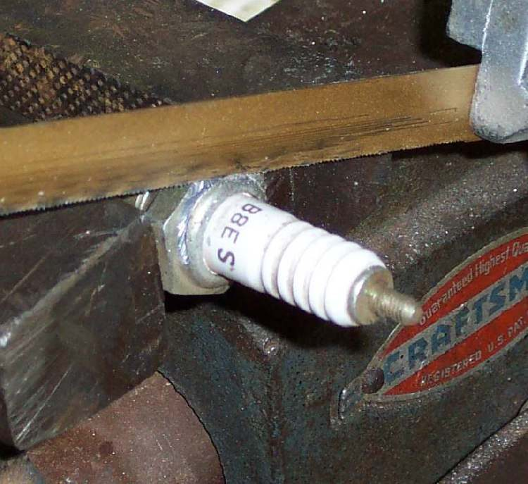
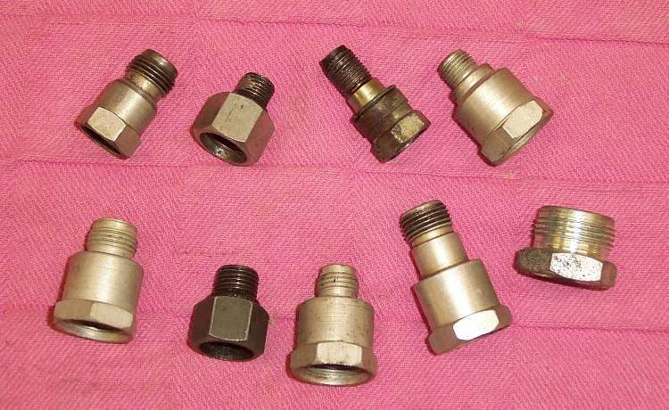
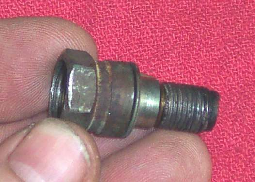

A compression gauge only reads correctly if it seals in the plug hole. Push-in rubber cones leak on deep or angled plug holes, and the right screw-in adapter is not always for sale. A worn-out spark plug of the correct thread and reach can be turned into an adapter that screws in like the real plug.
Safety
- Wear safety glasses. Metal chips and the ceramic can fly off when cutting and knocking.
- Use a plug that is already scrap. Never cut a plug you still need.
- Hold the plug in a vice with soft jaws or a rag so the thread is not crushed.
- The finished adapter is for testing only. It is not a spark plug and must never be fitted to run the engine.
You need
- A used plug with the same thread diameter, thread length (reach) and seat type (flat washer or tapered) as the plug in your engine. Check the old plug against the one that is in the bike.
- A hacksaw, a drift or punch, a hammer.
- A tap to cut a thread inside the plug body. Use the thread size of your gauge hose or fitting (check the gauge).
- A drill, if the hole must be opened to the tap size.
Steps
- Hold the plug body in the vice by the hex, thread end pointing up.
- Saw through the crimped lip at the top of the body, so the lip comes off as a ring. This frees the ceramic.
- Turn the plug over and knock the ceramic and centre electrode out with the drift, from the thread end towards the top.
- Remove all ceramic pieces and the sealing washers inside. Clean the body with solvent and dry it.
- Remove the side electrode if it sticks into the bore. File the cut edges smooth.
- Look at the hole through the body. If it is already the tap size of your gauge fitting, cut the thread with the tap. If it is smaller, drill it to the tap drill size first. Keep the tap straight and back it off often to clear chips.
- If the hole is too big to tap, a welder can fill it with weld metal, and it is then drilled and tapped. This is a workshop job.
- Screw the gauge fitting into the new thread by hand. It should seat without force. Use a thread sealant or a small rubber washer if it leaks.
- Fit the adapter to the engine hand tight with the usual plug washer, then follow Test engine compression.
Check your work
- The adapter screws into the plug hole without cross-threading and seats on the cylinder head.
- The gauge fitting screws in and does not leak when the engine is turned over. The needle should stay up after the cranking stops until you press the release.
- No ceramic pieces or chips remain inside the adapter or fell into the cylinder.
If it did not fix the problem
- The reading is still low: Low compression.
- No gauge and no adapter: use Rough compression check with a thumb to find out whether the engine has any real compression.